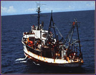

|
|
|
|
|
| CALIFORNIA EXPLORES THE OCEAN |
California Explores
the Ocean provides access for the citizens of California to a diverse
array of resources about the ocean and ocean exploration from the unique
collections of the Scripps Institution of Oceanography Archives and
Library and to a selection of ocean related photographs and oral
histories from the collections of the San Diego Historical Society. Primary funding provided by
an LSTA grant.
|
|
|
 |
|
|
|
|
|
|
|
|
|
Expeditions
Explore the ocean on research vessels of the Scripps
Institution of Oceanography; see expedition photographs, reports, ship's
logs, maps and sailor's letters home. |
Photographs &
Other Media
View thousands of images and listen to oral histories
that document the importance of ocean exploration from institutions such
as the San Diego Historical Society and the Scripps Institution of
Oceanography. |
Fish Bulletin
Wide variety of general interest and specialized topics
from the Calif. Dept. of Fish and Game. |
Publications &
Other Resources
A selection of publications on the ocean and related
activities in California. |
Contributors
- San Diego Historical Society
- Scripps Institution of Oceanography Archives
- University of California, San Diego Libraries
|

© Copyright UCSD, All Rights Reserved. This site may not be reproduced.
UCSD Libraries, 9500 Gilman Drive #0175, La Jolla, CA 92093, 858-534-3336
|